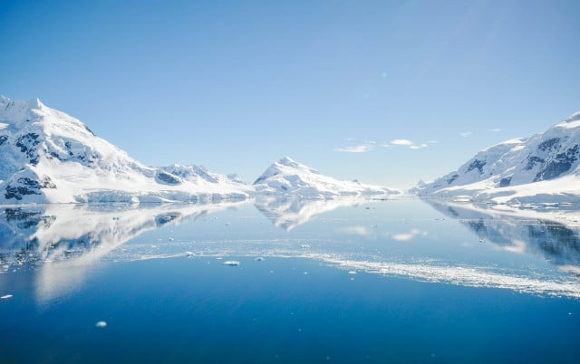

តើគេចែកតំបន់អាកាសធាតុជាប៉ុន្មាន?
គេចែកតំបន់អាកាសធាតុជាប៉ុន្មានតំបន់?
គេចែកតំបន់អាកាសធាតុជាបីសំខាន់ៗគឺ ៖
- តំបន់អាកាសធាតុត្រូពិច មានសីតុណ្ហភាពនិងសំណើម ខ្ពស់ជាធម្មតាបរមាណទឹកភ្លៀងមានច្រើនស្ទើរតែពេញ មួយឆ្នាំតំបន់នេះមានខ្យល់បក់ពីខាងលិចឆ្ពោះទៅឆ្នេរសមុទ្រ ។
- តំបន់អាកាសធាតុត្រជាក់បង្កួរ តំបន់នេះ សីតុណ្ហភាពជាកត្តាលសំខាន់សម្រាប់កំណត់រដ្ឋវឲ្យខុសគ្នា និងដាច់ពីគ្នា គឺមិនមែនដូចតំបន់ត្រូពិចទេសីតុណ្ហភាពតំបន់នេះទទួលឥទ្ធិពលពីម៉ាសខ្យល់ប៉ូលផងនិងត្រូពិចផង ។ អាកាសធាតុត្រជាក់បង្គួរចែកជាពីរប្រភេទគឺ អាកាសធាតុត្រជាក់បង្គួរសមុទ្រនិងទ្វិប ។
- តំបន់អាកាសធាតុប៉ូលៈ តំបន់អាកាសធាតុមានសីតុណ្ហភាពត្រជាក់ជាងគេបំផុត សីតុណ្ហភាពតំបន់ស្ថិតនៅក្រោម ០ អង្សាសេ ជានិច្ចទោះជារដូវក្តៅក៏ដោយក៏សីតុណ្ហភាពមធ្យមមិនលើសពី ១០អង្សាសេ ដែរ ហើយតំបន់នេះមានភ្លៀងធ្លាក់តិចតួច ណាស់រដូវទឹកកកជារាត្រីប៉ូលដែលរដូវនេះមានយប់៦ខែ ។